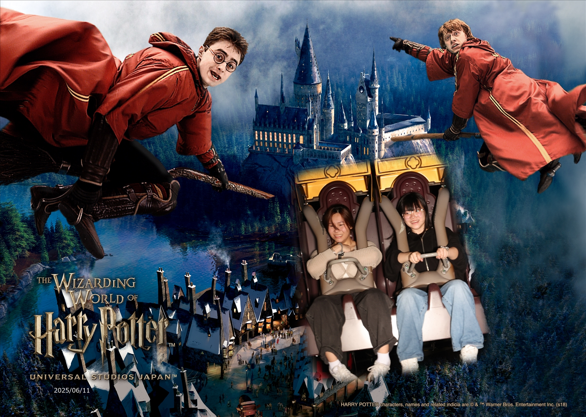
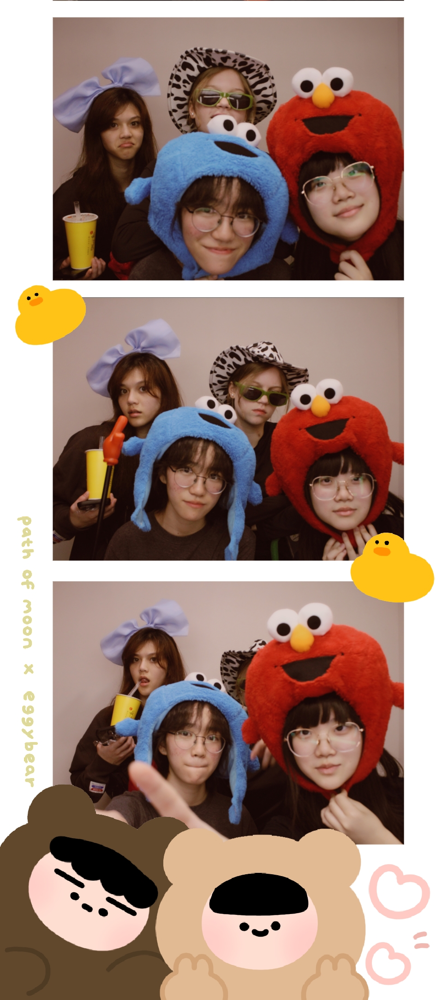
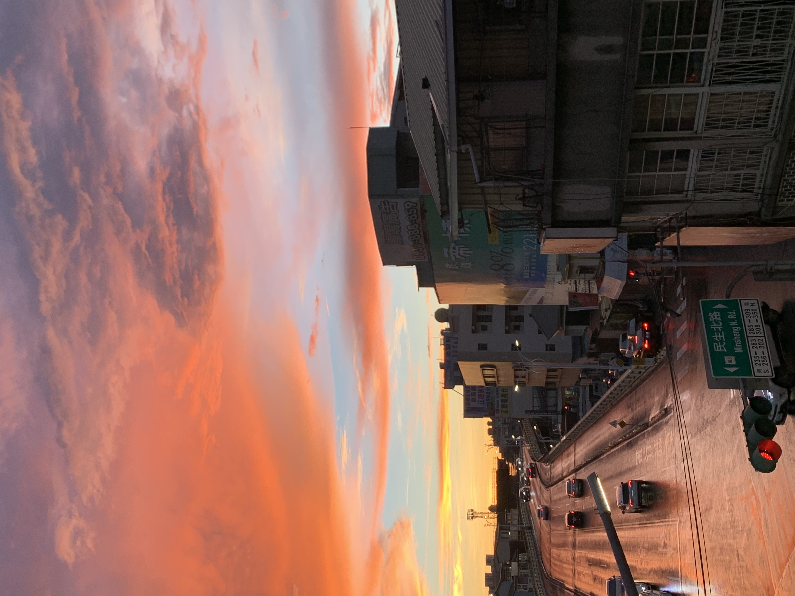
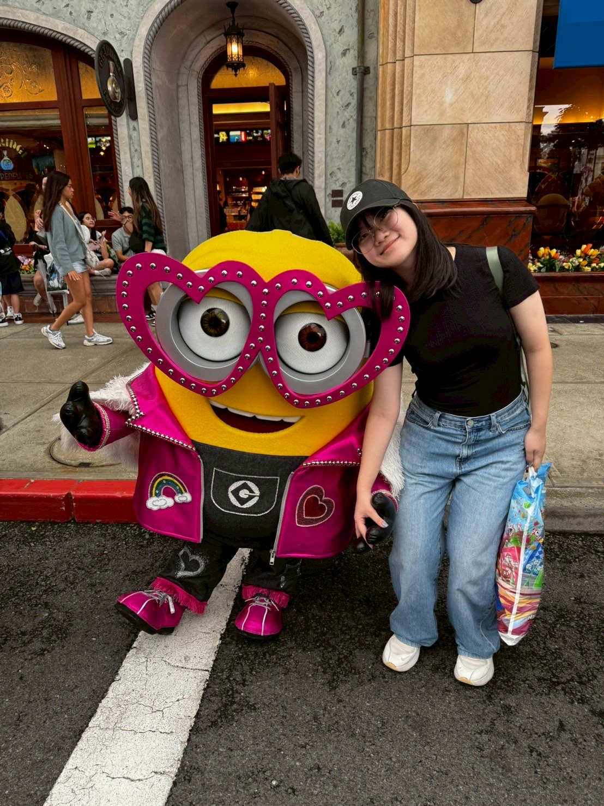

Who am I?
I'm a current freshman at UCSD, studying Cognitive Science with a specialization in Design & Interaction. Before that, I was an artist, a developer, and an entrepreneur. Whilst these roles have taught me many things, there is one central theme that stays: the ability to think for others. That’s why I’m drawn to design – I am eager to turn human understanding into meaningful experiences that resonate with people.
Why design?
To me, design is about seeing the world through someone else’s eyes– understanding their emotions, challenges, and needs, then creating something that truly resonates. It’s not just about solving problems, but also building connections and making everyday moments a little bit more thoughtful. It can be as simple as a student briefly pausing to notice a poster on their way to class, noticing something that makes them smile or think a little deeper.
Extra fun facts :)
When I'm not designing, you can catch me exploring the outdoors around San Diego (I love hiking!), scrapbooking memories from my travels, and enjoying the occasional Somisomi ↗.
I also LOVE the Minions (see bottom right image.) I won a banner design competition for the game Minion Rush and won a costume for Fluffycorn Carl ↗ (my greatest achievement)



